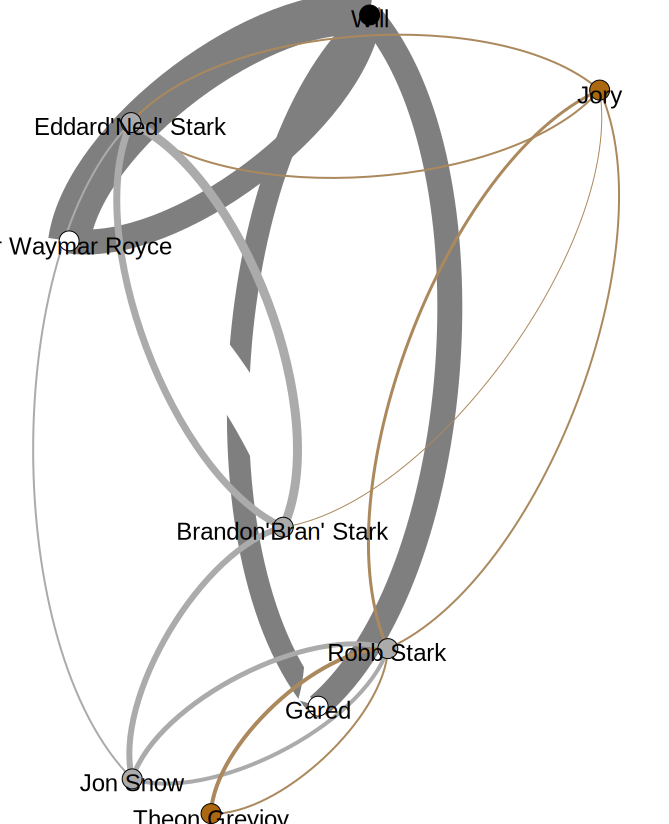

In this project, we measure relationships between the characters based on the Definitions defined. In the network map provided, the following colours are used to represent the Houses (based on the primary colour from their coat of arms) and the dead:
The colour indicator of a character follows the following level of priority given below, ordered by descending order.
This project is currently ongoing. The colours and relationship values are as of Page 14 of the book by George R. R. Martin and Season 1 Episode 1 from the TV series of the same name, broadcasted by HBO. The comparison provided below in incomplete and should only be used as a proof of concept.
Play with GOT (Book)'s Network Map
Playable map not available on Chrome. Please try Firefox.

Playable map not available on Chrome. Please try Firefox.